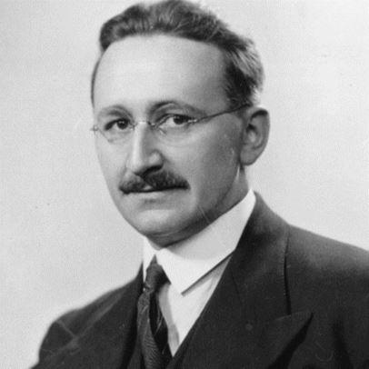

Dans son ouvrage intitulé Le Piège de Thucydide, l’universitaire américain Graham Allison se demande comment les États-Unis vont pouvoir enrayer la montée de la Chine. Ce ne sera pas en lui faisant la guerre, reconnaît cet auteur, car la puissance militaire chinoise est dissuasive, et en cas d’affrontement, les dommages causés aux uns et aux autres seraient insupportables. Ce ne sera pas non plus sur le terrain économique, car sur ce terrain, estime Graham Allison, les Chinois ont déjà détrôné l’ex-première puissance planétaire et il y a tout lieu de penser qu’ils vont confirmer cet avantage dans les années à venir.
Faut-il donc que les États-Unis se résignent à la victoire de leur nouvel adversaire systémique au moment où Mike Pompeo, le chef de la diplomatie américaine, désigne le parti communiste chinois comme le « principal ennemi » de son pays ? Graham Allison répond alors par la négative. Si l’on ne peut rien attendre d’un conflit armé parce qu’il serait suicidaire, ni d’une compétition économique perdue d’avance, il reste toutefois un domaine où Washington peut compenser son infériorité, dit-il, et ce domaine est celui des « droits de l’homme ».
Comme jadis face à l’Union soviétique, la litanie des « droits de l’homme » est le carburant idéologique de la nouvelle guerre froide. Si l’on en croit les dirigeants américains, et ce discours est relayé par une presse occidentale servile, les Chinois commettraient des horreurs sans nom contre leur propre population. Au Xinjiang, région autonome du Nord-Ouest de la Chine, « des millions » de Ouïghours seraient enfermés et torturés dans des camps de concentration. Or cette accusation grotesque a été démentie par Pékin et par des dizaines de pays musulmans qui se félicitent de la politique préventive et répressive menée par la Chine contre le terrorisme d’importation made in CIA.
À Hong Kong, lors des manifestations populaires qui ont secoué l’ancienne colonie britannique, la presse occidentale prophétisait un bain de sang analogue au « massacre » de la Place Tiananmen. Malgré les provocations d’agitateurs extrémistes ouvertement soutenus par les États-Unis, le maintien de l’ordre par la police de Hong Kong s’est caractérisé au contraire par sa retenue, offrant un contraste saisissant avec la violence déchaînée en France, au même moment, contre les Gilets Jaunes, avec ces dizaines de milliers d’arrestations, ces 200 blessés graves et ces 25 mutilés qui portent l’empreinte de notre belle « démocratie » et dont il n’y a aucun équivalent en Chine, un pays pourtant qualifié par l’Occident de « dictature totalitaire ».
Substituer à la réalité des faits une réalité fantasmée
Ainsi la propagande invente un monde imaginaire où la conscience occidentale vierge de toute impureté, en croyant dénoncer les turpitudes commises par les autres, ne chasse que des fantômes. Elle excelle dans l’art de fabriquer des faits inexistants, d’anticiper des événements invraisemblables et de substituer à la réalité des faits une réalité fantasmée. Et à chaque fois, à chaque mensonge, cette propagande brandit les « droits de l’homme » comme Moïse brandissait les Tables de la Loi. Et à chaque fois, l’Occident dopé à la moraline distribue les châtiments et les récompenses, comme s’il était le dépositaire universel de ces « droits de l’homme » qui coïncident si aisément avec ses propres intérêts.
On se demande bien, pourtant, à quel titre un pays comme les États-Unis serait fondé à juger la politique intérieure des autres pays à l’aune de principes humanistes. Fondé par des colons esclavagistes et génocidaires qui se prenaient pour le peuple élu, cet État a surtout brillé durant sa brève histoire par sa capacité à violer les droits de l’homme non-américain et de l’homme non-blanc, quitte à massacrer des populations entières lorsqu’elles se montraient peu réceptives au message salvateur. Comme les autres, la doctrine des droits de l’homme ne vaut rien s’il s’avère que son application justifie des horreurs. Et si les droits de l’homme sont « universels et imprescriptibles », ceux qui les ont constamment à la bouche ont surtout fait la démonstration qu’ils n’étaient ni l’un ni l’autre.
Il est légitime, en tout cas, de se demander pourquoi la doctrine des droits de l’homme est un instrument de propagande si commode. On pourrait répondre, bien sûr, par la thèse du détournement pervers. Si la doctrine justifie ce qu’elle paraît condamner, c’est que les puissants l’ont « détournée » de son sens originel. La doctrine serait pure, certes, mais son usage, lui, serait impur. C’est ce que dit Rousseau à propos des lois. Idéalement, elles sont l’expression de la volonté générale, elles visent l’intérêt commun. Mais « dans les faits, dit-il, les lois sont utiles à ceux qui possèdent et nuisibles à ceux qui n’ont rien ». Car dans le monde réel ce sont les puissants qui font les lois, et dans une société injuste, les lois ne peuvent être justes.
La véritable portée de l’idéologie des droits de l’homme
Or on ne peut faire le même raisonnement à propos des droits de l’homme. On ne peut pas se contenter de dire, par exemple : les droits de l’homme sont une chose excellente, mais les États-Unis les détournent de leur véritable signification, ils les utilisent pour justifier l’ingérence dans les affaires des autres nations et couvrir leur impérialisme des oripeaux de l’humanisme. Naturellement cette proposition est vraie : oui, les États-Unis instrumentalisent la doctrine des droits de l’homme. Mais il ne suffit pas de faire ce constat. Car si cette instrumentalisation est possible, c’est qu’il y a quelque chose dans la doctrine des droits de l’homme qui se prête à cette instrumentalisation.
Pour saisir cette relation, Il faut se pencher sur la fameuse « Déclaration des droits de l’Homme et du Citoyen » de 1789. Elle énonce à l’article 1 que « les hommes naissent et demeurent libres et égaux en droits ». Puis son article 2 précise que « les droits naturels et imprescriptibles de l’homme sont la liberté, la propriété, la sûreté et la résistance à l’oppression ». On notera aussitôt que l’égalité ne fait pas partie explicitement des droits de l’homme, que la propriété vient immédiatement après la liberté et que la sûreté, qui garantit la liberté et la propriété, occupe la troisième place.
– Bernard Kouchner, le méprisable champion autoproclamé des droits de l’homme, les Ouigours chinois sont des yogourts !
On relèvera aussi la définition de la liberté, à l’article 4, comme « le pouvoir de faire tout ce qui ne nuit pas aux droits d’autrui ». Or, comme dit Marx, cette liberté est celle de « l’homme considéré comme une monade isolée, repliée sur elle-même ».
Purement individuelle, cette liberté a des limites qui sont « marquées par la loi, de même que la limite de deux champs est déterminée par un piquet ». Fort logiquement cette liberté de l’individu s’épanouit avec la propriété, ce droit de « jouir de sa fortune et d’en disposer à son gré, sans se soucier des autres hommes, indépendamment de la société ».
Au fond, conclut Marx, « aucun des prétendus droits de l’homme ne dépasse l’homme égoïste, l’homme en tant que membre de la société bourgeoise, c’est-à-dire un individu séparé de la communauté, replié sur lui-même, uniquement préoccupé de son intérêt personnel et obéissant à son arbitraire privé. L’homme est loin d’y être considéré comme un être générique ; tout au contraire, la vie générique elle-même, la société, apparaît comme un cadre extérieur à l’individu, comme une limitation de son indépendance originelle » (Sur la Question juive, 1843).
Autrement dit, les droits affirmés par la déclaration de 1789 sont des droits abstraits qui ne correspondent à aucune réalité concrète hormis l’exercice par les propriétaires de leur droit de propriété et la garantie solennelle que leur offre la société bourgeoise. Elle a beau proclamer le caractère universel et imprescriptible de la « liberté », par exemple, ce ne sont que des mots. Séparée du cadre social susceptible de lui donner un contenu, cette universalité présumée est une universalité abstraite, et non une universalité concrète. Si l’on veut prendre au sérieux la liberté, il faut en faire un droit concret, et non un droit abstrait. Et pour qu’elle accède à cette réalité concrète, pour qu’elle ait un contenu, il faut la penser autrement que comme la liberté de l’individu.
Il fallait faire ce bref détour par l’analyse théorique pour saisir la véritable portée de l’idéologie des droits de l’homme. Le texte de 1789 est un manifeste dont la fonction est de rendre légitime le transfert du pouvoir, sous toutes ses formes, à la bourgeoisie montante. Il entend justifier la rupture avec la société féodale et ses hiérarchies héréditaires. Mais il n’affirme l’égalité en droits que pour justifier les inégalités de fortune. Son principal rédacteur, l’abbé Sieyès, est l’inventeur de la fameuse distinction entre « citoyens actifs » et « citoyens passifs » : seuls les premiers, parce qu’ils sont propriétaires, sont appelés à voter car ils sont « les véritables actionnaires de la grande entreprise sociale ».
Lorsqu’on entend certains États invoquer les droits de l’homme pour stigmatiser leurs adversaires, il n’est pas inutile de se rappeler que la déclaration des droits dont se réclament les premiers n’est que la déclaration des droits de la bourgeoisie. Lors des débats parlementaires, Robespierre dénonçait déjà le caractère de classe du futur texte : « Vous avez multiplié les articles pour assurer la plus grande liberté à l’exercice de la propriété, et vous n’avez pas dit un seul mot pour en déterminer le caractère légitime ; de manière que votre déclaration paraît faite, non pour les hommes, mais pour les riches, pour les accapareurs, les agioteurs et les tyrans ».
On comprend mieux, dès lors, que la compassion humaniste de nos merveilleuses « démocraties » soit à géométrie variable. Les États-Unis n’ont jamais émis la moindre réserve à l’égard de leur ami, le dictateur cubain Fulgencio Batista, et de ses pratiques répressives, mais ils ont déchaîné leur propagande contre Cuba le jour où le gouvernement révolutionnaire de Fidel Castro a décidé de nationaliser les actifs des compagnies américaines installées sur le sol national. La « liberté », pour Washington, c’est le droit de ses propres compagnies à encaisser indéfiniment les profits de l’exploitation économique d’un petit pays de la Caraïbe. Manifestement, la « liberté » n’est pas le droit d’une nation à défendre sa souveraineté et à promouvoir son développement.
Si les dirigeants des États-Unis, aujourd’hui, tentent de déstabiliser la Chine, ce n’est pas parce qu’il y a des « millions de Ouïghours » dans des camps de concentration. Ils savent très bien que c’est une fable grotesque, analogue à l’attaque des vedettes nord-vietnamiennes, aux armes de destruction massive de Saddam Hussein, aux couveuses de Koweit-City, aux tueries imaginaires de Kadhafi et aux crimes chimiques de Bachar Al-Assad. Le droit-de-l’hommisme made in CIA est une formidable usine à mensonges, acharnée à occuper le quantum de cerveau disponible des téléspectateurs occidentaux pour justifier ses opérations prédatrices, avec le concours d’ONG trop heureuses d’apporter leurs boules de neige à cette avalanche de calomnies qui s’abat sur les pays qui osent résister à l’hégémonisme occidental.
Si Washington veut en découdre avec la Chine, donc, ce n’est pas parce que les Chinois sont opprimés par une abominable dictature et qu’ils rêvent secrètement de connaître le bonheur de vivre à l’américaine, avec fusillades dans les collèges, discrimination raciale, mafias en tout genre et soupes populaires. C’est, tout simplement, parce que ce pays est attaché à sa souveraineté, qu’il est doté d’un système performant, que ses dirigeants en ont fait la première puissance de la planète et que les perspectives de profit de l’oligarchie financière mondialisée dont le quartier général est à Wall Street, dans ces conditions, tendent sérieusement à s’amenuiser au même rythme que l’espoir, pour les États-Unis, de préserver une hégémonie vacillante.
Droits abstraits et droits réels
On ne s’en étonnera pas, bien sûr, mais que les Chinois aient sorti de la pauvreté 700 millions de personnes en 20 ans n’intéresse guère les belles âmes du droit-de-l’hommisme occidental. Brillant théoricien du néolibéralisme, Friedrich Hayek estimait que les droits sociaux inscrits dans la Déclaration universelle des droits de l’homme de 1948 étaient une abomination.
Ces droits à la vie, au travail, à la santé ou à l’éducation ont pourtant le double mérite d’être véritablement universels dans leur définition et de correspondre à des possibilités concrètes dès lors que les États leur offrent un contenu.
Contrairement à la Déclaration de 1789, celle de 1948 traduisait en effet un rapport de forces entre bourgeoisie et classes populaires issu du pacte social scellé à la Libération et favorisé par l’effondrement du libéralisme.
Au vu des résultats, certains pays semblent avoir pris au sérieux les droits sociaux proclamés en 1948. Ces pays n’ont rien de libéral, et c’est pourquoi ils se sont dotés, au profit du grand nombre, d’un système éducatif et d’un système sanitaire qui fonctionnent. Malgré le blocus, Cuba a créé un système de santé récompensé par l’OMS, et l’espérance de vie à Cuba (80 ans) a dépassé celle des États-Unis (79 ans). Lors de la dernière évaluation internationale des systèmes éducatifs (PISA), qui a porté sur un échantillon de 600 000 lycéens dans 50 pays au cours de l’année 2018, la République populaire de Chine est arrivée en tête à égalité avec Singapour. Ces résultats obtenus aujourd’hui par un pays qui comptait 80 % d’analphabètes en 1949 devraient faire réfléchir tous ceux qui s’intéressent à la transformation effective des droits formels en droits réels.
Mais le droit-de-l’hommisme ordinaire, celui des ONG, ne s’intéresse qu’aux droits individuels et délaisse les droits collectifs. Sa compassion pour l’humanité souffrante est sélective. Il ne se mobilise que pour des minorités ou des individus isolés, agissant au cas par cas en sélectionnant ceux qu’il juge dignes de son attention. Il veut combattre la discrimination et non l’exploitation, l’exclusion et non la pauvreté, la privation de liberté infligée à quelques-uns et non la misère imposée au grand nombre. Il ne connaît que des individus porteurs de droits et se soucie peu de savoir s’il y a parmi eux des riches et des pauvres. Le seul combat qui compte à ses yeux vise à aligner des individus abstraits sur un standard restreint aux libertés formelles.
En réalité, le droit-de-l’hommisme ordinaire occulte le fait que les libertés ne sont effectives que si les droits collectifs sont garantis par certaines structures sociales. Il tend à masquer le fait que les droits sont réels si les individus sont correctement nourris, logés, éduqués et soignés, et ces conditions ne sont réunies à leur tour que si l’État prend les choses en main et les inscrit dans la durée. Bref, ces belles âmes oublient tout simplement que les individus ne sont rien sans la société et que les droits dont on réclame l’application ne sont que du vent si la société, délibérément, ne leur donne pas un contenu concret au lieu de s’en remettre aux mirifiques lois du marché vantées par un libéralisme frelaté.
Cultivant cet oubli, et participant de cette occultation, les ONG pétries d’humanisme réduisent alors l’humanité souffrante à un agrégat indistinct d’individus abstraits, atomisés, dont le sort n’est intéressant que s’il témoigne d’une violation réelle ou imaginaire de leurs droits individuels, de préférence dans un pays exotique qui se trouve dans le collimateur de Washington. C’est sans doute pourquoi le principal événement sociologique planétaire des deux dernières décennies, à savoir l’éradication de la pauvreté en République populaire de Chine, les intéresse beaucoup moins que les camps de concentration imaginaires du Xinjiang et les poubelles renversées par de jeunes imbéciles dans le métro de Hong Kong.
Bruno Guigue, ancien élève de l’École Normale Supérieure et de l’ENA, Haut fonctionnaire d’État français, essayiste et politologue, professeur de philosophie dans l’enseignement secondaire, chargé de cours en relations internationales à l’Université de La Réunion. Il est l’auteur de cinq ouvrages, dont Aux origines du conflit israélo-arabe, L’invisible remords de l’Occident, L’Harmattan, 2002, et de centaines d’articles. Dernier ouvrage paru en janvier 2018 aux éditions DELGA : Chroniques de l’impérialisme, préface de Samir Amin, 20 euros.
Partager cette page